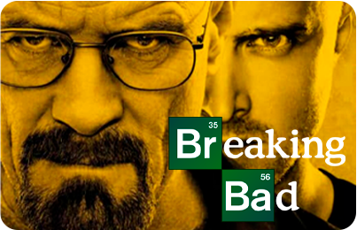
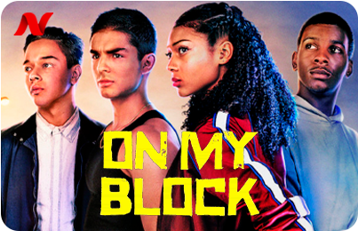
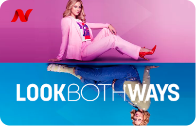
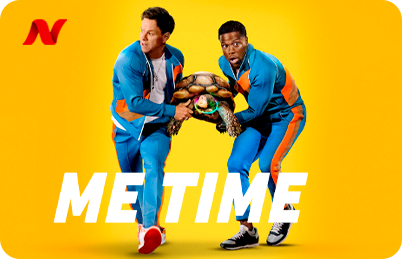
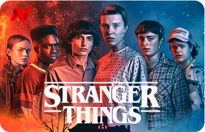
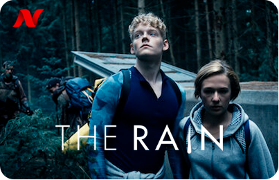
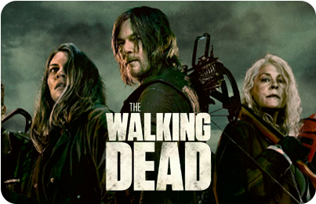

Em 6 de Novembro, 1983 na pequena cidade de Hawkins, Indiana, o garoto de 12 anos, Will Byers desaparece misteriosamente. A mãe de Will, Joyce, torna-se frenética e tenta encontrar Will enquanto o chefe de polícia Jim Hopper começa a investigar, e assim fazem também os amigos de Will: Dustin, Mike e Lucas. No dia seguinte, uma menina psicocinética que sabe o paradeiro de Will é encontrada pelos meninos. À medida que eles descobrem a verdade, uma sinistra agência do governo tenta encobri-los, enquanto uma força mais insidiosa espreita logo abaixo da superfície.
Countinuar assistindo






